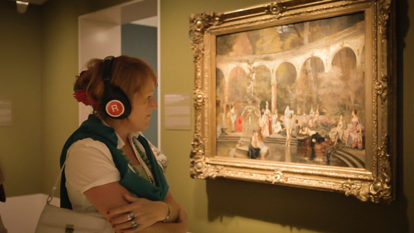

Your browser doesn't support the features required by impress.js, so you are presented with a simplified version of this presentation.
For the best experience please use the latest Chrome, Safari or Firefox browser.
Sonic Paintings
Sonic Paintings proposes a new, broadened way to perceive art in a multi-sensory setting. In addition to visual and background information either from painting description, books or audio guides, the viewer will be able to encounter sonic information contained in painting.

The first implementation was made for the Hermitage Museum as part of their exhibition called "Impressionism: Sensation & Inspiration".


